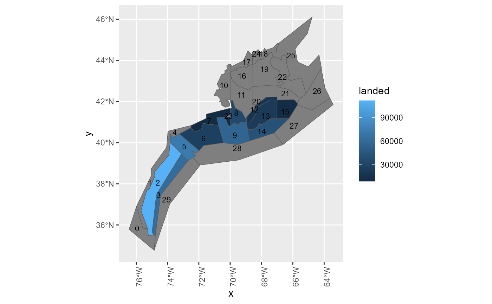
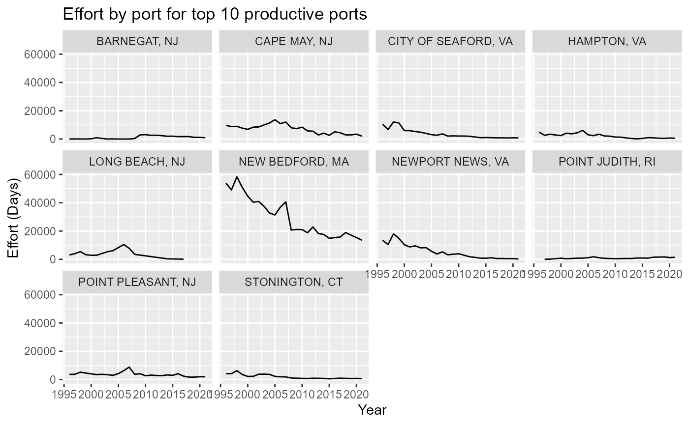

scallops.Rmd
library(atlantiscas)
library(ncdf4)
library(sf)
#> Linking to GEOS 3.9.3, GDAL 3.5.2, PROJ 8.2.1; sf_use_s2() is TRUE(Codebase v6681)
Forced effort time series (days \(day^{-1}\)) - effortmodel = 11 (Running into segmentation error issues)
YYY_effort > 0 (Fixed total effort, days \(day^{-1}\))
First look at the data to see how many gear types, and which ports landed the scallops.
The fishing data were processed and passed through minimal QA/QC. All ports were assigned lat and lons (as best as possible), all landings were assigned to an atlantis group.
SCA is the atlantis group for scallops.
Gear Categories identified, in the data set, as scallop vessels were
These GEARCAT(s) were filtered to provide the following output
| GEARCAT | GEARCODE |
|---|---|
| DREDGE SCALLOP | DRS |
| DREDGE SCALLOP | DSC |
| Scallop Gear | OTC |
| Scallop Gear | DSC |
| Scallop Gear | DRS |
| Scallop Gear | DTS |
| TRAWL BOTTOM SCALLOP | OTC |
| Functional_Group | lbs |
|---|---|
| Sea scallop | 1.037144e+09 |
| Goosefish | 2.732620e+07 |
| Other benthic filter feeder | 7.669973e+06 |
| Summer flounder | 3.031341e+06 |
| Shallow macrozoobenthos | 2.105064e+06 |
| NA | 7.574708e+05 |
| Yellowtail flounder | 6.557160e+05 |
| Winter flounder | 4.057249e+05 |
| Illex squid | 3.398922e+05 |
| Other flatfish | 1.804354e+05 |
| Atlantic menhaden | 1.746612e+05 |
| Benthic grazer | 1.548213e+05 |
| Loligo squid | 1.393730e+05 |
| Other shrimps | 1.326892e+05 |
| Lobster | 1.110017e+05 |
| Scup | 1.060666e+05 |
| Silver hake | 1.005329e+05 |
| Drums and croakers | 8.586738e+04 |
| Miscellaneous demersal fish | 7.390935e+04 |
| Witch flounder | 6.261435e+04 |
| Black sea bass | 5.003521e+04 |
| Spiny dogfish | 4.728772e+04 |
| Bluefish | 2.979998e+04 |
| Northern shrimp other pandalids | 2.803663e+04 |
| Atlantic cod | 2.688089e+04 |
| Striped bass | 2.420440e+04 |
| American plaice | 2.041436e+04 |
| Smooth dogfish | 1.499850e+04 |
| Red hake | 1.435168e+04 |
| Pollock | 1.398300e+04 |
| Little skate | 1.077335e+04 |
| Northeast skate complex | 1.002039e+04 |
| Offshore hake | 8.891512e+03 |
| Atlantic surf clam | 6.932614e+03 |
| Windowpane flounder | 6.790908e+03 |
| Tautog | 6.411881e+03 |
| Haddock | 4.895248e+03 |
| Other tunas | 4.570632e+03 |
| Butterfish | 4.348809e+03 |
| Atlantic bluefin tuna | 3.790000e+03 |
| Winter skate | 3.500000e+03 |
| Atlantic mackerel | 3.463525e+03 |
| Wolffish | 3.127577e+03 |
| Shallow demersal fish | 3.109265e+03 |
| Atlantic states demersal fish | 3.107419e+03 |
| Other benthopelagic fish | 1.989513e+03 |
| All tilefish | 1.471974e+03 |
| Benthic Carnivore | 8.970000e+02 |
| White hake | 7.765486e+02 |
| Fourspot flounder | 4.510000e+02 |
| Migratory mesopelagic fish | 3.779871e+02 |
| Atlantic herring | 3.731768e+02 |
| Atlantic halibut | 3.480000e+02 |
| Other pelagic sharks | 3.122401e+02 |
| Billfish | 1.970000e+02 |
| Other demersal sharks | 1.560000e+02 |
| Atlantic salmon | 7.000000e+01 |
| Ocean pout | 5.898983e+01 |
| Red deep-sea crab | 2.100000e+01 |
| Sandbar shark | 1.822476e+01 |
| Ocean quahog | 3.993587e+00 |
| Acadian redfish | 2.984841e+00 |
| Blue shark | 1.500000e+00 |
dataBox <- dataF |>
dplyr::filter(source == "CAMS") |>
dplyr::group_by(Box) |>
dplyr::summarise(mt = sum(mt))
# select boxes which account fo 95% of landings
landings <- dataBox |>
dplyr::arrange(desc(mt)) |>
dplyr::mutate(cumsum = cumsum(mt), prop = cumsum/sum(mt)) |>
dplyr::filter(prop <= 0.95)
NEFSCspatial::Neus_atlantis |>
dplyr::left_join(landings,by = c("BOX_ID"="Box")) |>
ggplot2::ggplot() +
ggplot2::geom_sf(ggplot2::aes(fill = mt)) +
ggplot2::geom_sf_text(ggplot2::aes(label = BOX_ID),
position = ggplot2::position_dodge(width=0.9), size=3)
#> Warning in st_point_on_surface.sfc(sf::st_zm(x)): st_point_on_surface may not
#> give correct results for longitude/latitude data
#> Warning: `position_dodge()` requires non-overlapping x
#> intervals.
Boxes that contribute 95% of landings 2, 3, 5, 6, 7, 8, 9, 12, 13, 14, 15
effort <- sca |>
dplyr::group_by(Year,PORTLANDED) |>
dplyr::summarise(effort = sum(InsideDAS),lbs = sum(InsideLANDED)) |>
dplyr::filter(PORTLANDED %in% ports)
#> `summarise()` has grouped output by 'Year'. You can override using the
#> `.groups` argument.
# |>
# tidyr::pivot_longer(-c(Year,PORTLANDED),names_to = "type",values_to = "value")
ggplot2::ggplot(effort) +
ggplot2::geom_line(ggplot2::aes(x=Year,y=effort)) +
ggplot2::facet_wrap(~as.factor(PORTLANDED)) +
ggplot2::ylab("Effort (Days)") +
ggplot2::ggtitle("Effort by port for top 10 productive ports")